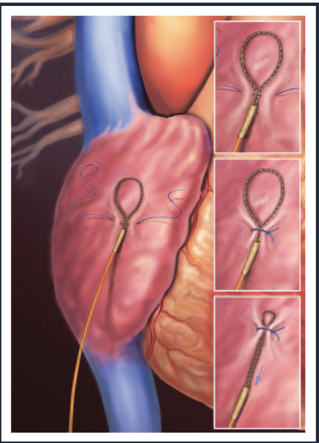
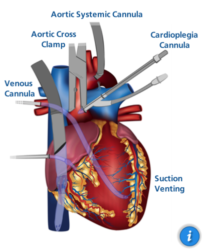
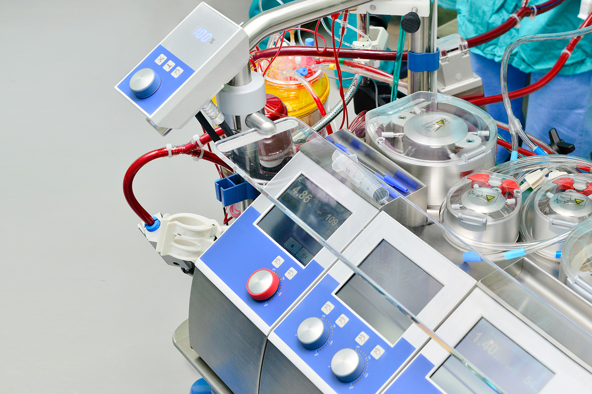

Prime Surgical Training
Included is a rubric to help acquire the necessary knowledge to excel in
this role. Be patient, as there is a lot to learn. This is a living
document and will be updated as we go. As you explore the topics
suggested below more broadly please develop a system for keeping notes.
The learning curve is much more manageable if you take the extra time up
front. Synthesize the information you are learning, and take useful
notes that you can refer back to. The objective is to develop a system
that allows you to quickly and easily find the information you need,
when you need it. The rest of the team will help assist you in this
endeavor as we get into the
technical product specifics (one-pagers)
part of the onboarding.
I highly suggest getting familiar with chatGPT (Link) and Bard (Link) from google. They will be impactful tools to help you with your understanding.
1. Resources
need to include all of these links
- [Prime Surgical Slack]
- [AirTable]
- [iCloud Drive - Shared Folder]
- [google Docs (primesurgical88@gmail.com)]
- Zimmer Biomet Loop Link - this is the main portal for us to access information from Zimmer Biomet. There is also a shared iCloud folder with the most important documents pre-selected
2. Foundation
In the foundation section, we will cover the basics of the human body. This will include the anatomy, physiology, and pathophysiology - mainly focused on the heart and broader thoracic cavity. The goal is to develop a solid understanding of the cadiovascular system & skeletal systems. This will help you understand the technical product specifics, and how they relate to the human body.
Anatomical Positioning & Types of Movement
Certainly! Understanding anatomical positions and types of movement is crucial in the medical field as it provides a standardized way of describing the human body and its movements, ensuring clear communication among healthcare professionals.
Anatomical Positions
-
Standard Anatomical Position:
- The body is standing upright.
- Feet are parallel and close together.
- Arms are at the sides.
- Palms face forward.
- The head is level, and eyes are looking forward.
-
Prone Position:
- The body is lying face down.
-
Supine Position:
- The body is lying face up.

Planes of the Body
Understanding the planes of the body is also crucial:
- Sagittal Plane: Divides the body into left and right halves.
- Frontal (Coronal) Plane: Divides the body into front (anterior) and back (posterior) halves.
- Transverse (Horizontal) Plane: Divides the body into upper (superior) and lower (inferior) halves.

Types of Movements
-
Flexion and Extension:
- Flexion: Decreasing the angle between two body parts, like bending the elbow.
- Extension: Increasing the angle, like straightening the elbow.
-
Abduction and Adduction:
- Abduction: Movement away from the midline of the body, like lifting the arm sideways.
- Adduction: Movement towards the midline, like bringing the arm back to the side.
-
Medial and Lateral Rotation:
- Medial Rotation: Turning towards the midline, like turning the head to face forward.
- Lateral Rotation: Turning away from the midline, like turning the head to the side.
-
Elevation and Depression:
- Elevation: Moving a body part upwards, like shrugging the shoulders.
- Depression: Moving a body part downwards, like relaxing the shoulders.
-
Protraction and Retraction:
- Protraction: Moving a body part forward, like jutting the jaw forward.
- Retraction: Moving it backward, like pulling the jaw back.
-
Supination and Pronation:
- Supination: Rotating the forearm so the palm faces up.
- Pronation: Rotating it so the palm faces down.
-
Dorsiflexion and Plantarflexion (pertaining to the foot):
- Dorsiflexion: Bending the foot upwards, decreasing the angle between the foot and the shin.
- Plantarflexion: Bending the foot downwards, increasing the angle.
-
Inversion and Eversion (pertaining to the foot):
- Inversion: Turning the sole of the foot inward.
- Eversion: Turning the sole of the foot outward.
-
Opposition and Reposition (pertaining to the thumb and little finger):
- Opposition: Bringing the thumb and little finger towards each other.
- Reposition: Moving them away from each other.
-
Circumduction:
- A conical movement involving sequential flexion, abduction, extension, and adduction, creating a circular or conical motion, like moving the arm in a circle.

Proximal and Distal
-
Proximal:
- Closer to the point of attachment or origin.
- For example, the elbow is proximal to the wrist.
-
Distal:
- Farther from the point of attachment or origin.
- For example, the wrist is distal to the elbow.

Understanding these positions and movements allows medical professionals to accurately describe and interpret physical examinations, radiographs, and surgical procedures. It's essential to be familiar with these terms to communicate effectively in clinical practice.
Great Online Videos & Resources for Foundational Knowledge:
Khan Academy - An amazing resource for learning in general. It is a completely free service that pools experience and expertise from a wide array of instructors, covering a wide array of topics. It is a great place to start, and a great place to come back to when you need to brush up on a topic.
This was the primary resource I used to learn the basics of the human body and cardiovascular system. I highly suggest going through the following modules, and taking notes as you go.
Review Circulatory anatomy & blood flow
- Meet the heart:
- Flow through the heart:
- Two circulations through the body:
- Parts of the heart:
- Lub dub:
- Arteries vs. veins - what's the difference?:
- Arteries, arterioles, venules, and veins:
- Thermoregulation in the circulatory system:
Heart Dieseases and Heart Attacks (https://www.khanacademy.org/science/health-and-medicine/circulatory-system-diseases/coronary-artery-disease/v/heart-disease-and-heart-attacks)
- Heart disease and heart attacks:
- Stenosis, ischemia and heart failure:
- Thromboemboli and thromboembolisms:
- What is coronary artery disease?:
- Risk factors for coronary artery disease:
- Atherosclerosis:
- Heart attack (myocardial infarction) pathophysiology:
- Heart attack (myocardial infarct) diagnosis:
- Heart attack (myocardial infarct) medications:
- Heart attack (myocardial infarction) interventions and treatment:
Section 11: Heart valve disease (https://www.khanacademy.org/science/health-and-medicine/circulatory-system-diseases/heart-valve-diseases/v/what-is-valvular-heart-disease)
-
~ 95 minutes of content
-
What is valvular heart disease?:
- Valvular heart disease causes:
- How to identify murmurs:
- Systolic murmurs, diastolic murmurs, and extra heart sounds - Part 1:
- Systolic murmurs, diastolic murmurs, and extra heart sounds - Part 2:
- Aortic stenosis and aortic regurgitation:
- Mitral valve regurgitation and mitral valve prolapse:
- Mitral Stenosis:
- Valvular heart disease diagnosis and treatment:
Nerd Ninja
-
Nerd Ninja - Video series with great visualization. Another great source of getting to know the funamentals
- valvular diease (https://www.youtube.com/watch?v=NUB7HBQP-SI)
- ischemic heart disease (heart attacks) (https://www.youtube.com/watch?v=pUxH_oVRcm4)
- the aortic valve - (https://www.youtube.com/watch?v=9QKVeA6h-bI)
- the mitral valve - (https://www.youtube.com/watch?v=HhIQVLFxXSY)
CV
Overview of Cardiovascular Anatomy and Physiology
The cardiovascular system, also known as the circulatory system, is a complex network consisting of the heart, blood vessels, and blood. It performs the vital function of delivering oxygen and nutrients to tissues, while removing carbon dioxide and other waste products.
-
Heart:
-
Anatomy: The heart is a four-chambered muscular
organ divided into two atria and two ventricles. The right side
receives deoxygenated blood and pumps it to the lungs, while the
left side receives oxygenated blood from the lungs and pumps it to
the systemic circulation.

-
Physiology: The cardiac cycle comprises three
major stages: atrial systole, ventricular systole, and diastole.
These stages are coordinated by electrical signals originating
from the sinoatrial (SA) node and traveling through the
atrioventricular (AV) node and the His-Purkinje system.

-
Anatomy: The heart is a four-chambered muscular
organ divided into two atria and two ventricles. The right side
receives deoxygenated blood and pumps it to the lungs, while the
left side receives oxygenated blood from the lungs and pumps it to
the systemic circulation.
-
Blood Vessels:
-
Anatomy: Blood vessels are categorized into
arteries, veins, and capillaries. Arteries transport blood away
from the heart, veins carry blood towards the heart, and
capillaries facilitate the exchange of nutrients, gases, and waste
between blood and tissues.
- Physiology: The smooth muscle in the arterial walls enables vasoconstriction and vasodilation, crucial for regulating blood pressure and distribution. Veins have valves to prevent backflow, ensuring unidirectional flow towards the heart.
-
Anatomy: Blood vessels are categorized into
arteries, veins, and capillaries. Arteries transport blood away
from the heart, veins carry blood towards the heart, and
capillaries facilitate the exchange of nutrients, gases, and waste
between blood and tissues.
-
Blood:
-
Composition: Blood comprises red blood cells (RBCs) for oxygen transport, white blood cells (WBCs) for immunity, platelets for clotting, and plasma as the fluid medium carrying hormones, nutrients, and gases.
-
Hemodynamics: This refers to the physical principles governing the flow and pressure of blood, essential for understanding various pathological conditions and the action of numerous cardiovascular drugs.
-
-
Microcirculation and Gas Exchange:
- In capillary beds, the exchange of oxygen, carbon dioxide, nutrients, and waste products occurs through diffusion, driven by concentration gradients.
-
Regulatory Mechanisms:
- Neural Regulation: The cardiovascular center in the medulla oblongata modulates heart rate and blood vessel diameter in response to various stimuli.
- Hormonal Regulation: Hormones like adrenaline, noradrenaline, and angiotensin II play significant roles in cardiovascular regulation.
-
Cardiac Output and Blood Pressure:
-
Cardiac output (CO) is the amount of blood pumped by the heart per
minute and is a product of heart rate (HR) and stroke volume (SV).
Blood pressure (BP) is crucial for perfusion to organs and is
regulated by various factors including CO, blood volume, and
vascular resistance.

-
Cardiac output (CO) is the amount of blood pumped by the heart per
minute and is a product of heart rate (HR) and stroke volume (SV).
Blood pressure (BP) is crucial for perfusion to organs and is
regulated by various factors including CO, blood volume, and
vascular resistance.
Circulatory Pathways - Pulmonary and Systemic Circulation
The human circulatory system operates via two interdependent pathways: the Pulmonary and Systemic Circulation. These pathways are crucial for transporting blood to and from the heart, thereby facilitating the exchange of gases, nutrients, and waste products throughout the body.
-
Pulmonary Circulation:
- Objective: The primary aim of pulmonary circulation is to oxygenate the blood while expelling carbon dioxide.
- Pathway: Deoxygenated blood from the body enters the right atrium via the superior and inferior vena cava. It then moves to the right ventricle, which pumps the blood through the pulmonary arteries to the lungs. Here, blood gets oxygenated during gas exchange in the alveoli.
-
Return to Heart: Oxygen-rich blood returns to the
heart via the pulmonary veins, entering the left atrium, marking
the transition from pulmonary to systemic circulation.

-
Systemic Circulation:
- Objective: Systemic circulation aims to deliver oxygenated blood to various body tissues, ensuring the delivery of nutrients, hormones, and oxygen while removing waste products like carbon dioxide.
- Pathway: From the left atrium, oxygen-enriched blood moves into the left ventricle, which pumps it into the aorta. The aorta branches into numerous smaller arteries and arterioles, which further subdivide into capillaries where the exchange of gases, nutrients, and waste occurs.
-
Return to Heart: After gas and nutrient exchange,
deoxygenated blood collects into venules, which coalesce into
veins, eventually forming the superior and inferior vena cava that
return blood to the right atrium, marking the commencement of
another pulmonary circulation cycle.

-
Key Regulatory Mechanisms:
- Cardiac Cycle Coordination: The coordination between the heart chambers ensures an efficient circulatory process. This coordination is governed by the hearts electrical conduction system, involving the sinoatrial (SA) node, atrioventricular (AV) node, and the His-Purkinje system.
- Vascular Tone: Vascular smooth muscle tone in arteries and arterioles plays a crucial role in regulating blood pressure and, consequently, blood flow to different body parts.
- Capillary Dynamics: Capillary permeability and pre-capillary sphincters manage blood flow through capillary beds, aiding in tissue perfusion and nutrient exchange.
-
Physiological Variables:
- Variables like heart rate, stroke volume, and systemic vascular resistance are essential determinants of systemic and pulmonary circulation efficacy. Understanding these variables provides insight into pathological states and therapeutic interventions.
-
Pathophysiological Implications:
- Disruptions in either circulation pathway can result in pathological conditions. For example, obstruction in pulmonary circulation can lead to pulmonary hypertension, while systemic circulation disruptions can result in conditions like peripheral artery disease.
This overview elucidates the core structural and functional facets of pulmonary and systemic circulatory pathways, foundational knowledge for comprehending the broader cardiovascular physiology and pathology.
Definition and Pathology of Ischemic Heart Disease
Ischemic Heart Disease (IHD), also known as Coronary Artery Disease
(CAD) or Coronary Heart Disease (CHD), is a pathological condition
characterized by reduced blood supply to the heart muscle, primarily due
to obstruction or spasm of the coronary arteries. It is a leading cause
of mortality and morbidity worldwide, and understanding its
pathophysiology is paramount for the aspiring medical practitioner.
-
Atherosclerosis:
-
The fundamental pathology underlying IHD is atherosclerosis, a
process characterized by the accumulation of cholesterol-laden
plaques within the walls of coronary arteries. Over time, these
plaques narrow the arteries, reducing blood flow to the
myocardium.
-
The fundamental pathology underlying IHD is atherosclerosis, a
process characterized by the accumulation of cholesterol-laden
plaques within the walls of coronary arteries. Over time, these
plaques narrow the arteries, reducing blood flow to the
myocardium.
-
Endothelial Dysfunction:
-
Endothelial dysfunction often precedes atherosclerosis, where the
inner lining of the arteries (endothelium) loses its normal
functioning, impairing vasodilation, and promoting inflammation
and plaque formation.

-
Endothelial dysfunction often precedes atherosclerosis, where the
inner lining of the arteries (endothelium) loses its normal
functioning, impairing vasodilation, and promoting inflammation
and plaque formation.
-
Plaque Rupture and Thrombosis:
- An acute coronary event often occurs when a plaque ruptures, triggering blood clot formation (thrombosis). This can further occlude the artery, leading to a significant reduction or cessation of blood flow downstream.
-
Ischemia and Myocardial Infarction (MI):
- The consequence of reduced blood flow (ischemia) can range from angina pectoris (chest pain) to myocardial infarction (MI), where prolonged ischemia causes necrosis of the myocardial tissue.
-
Compensatory Mechanisms:
- Initially, the heart tries to compensate for reduced blood supply through various mechanisms like collateral circulation, where small blood vessels remodel themselves to bypass blockages. However, these compensations are often insufficient during increased demand, such as exercise.
-
Electrical Instability:
- Ischemia can disrupt the electrical activity of the heart, leading to arrhythmias, which are a significant cause of morbidity in IHD.
-
Heart Failure:
- Chronic IHD can lead to heart failure, a condition where the heart is unable to pump blood effectively to meet the body's needs.
-
Diagnosing Ischemic Heart Disease:
- Diagnosis is usually based on a combination of clinical history, physical examination, electrocardiogram (ECG), stress testing, and imaging studies like coronary angiography.
-
Risk Factors:
- Identifiable risk factors include hypertension, hyperlipidemia, smoking, diabetes, obesity, and a family history of cardiovascular disease.
-
Clinical Management:
-
Management strategies aim to restore coronary perfusion, alleviate
symptoms, and prevent future cardiac events. These include lifestyle
modifications, pharmacotherapy (e.g., antiplatelets, statins), and
interventional procedures like angioplasty and coronary artery bypass
grafting (CABG).

This summary delineates the critical concepts surrounding ischemic heart disease, offering an essential foundation for further exploration into its diagnosis, management, and the broader implications for cardiovascular health and disease.
Acquired Valvular Heart Diseases: Stenosis and Regurgitation
Valvular heart diseases, predominantly manifesting as Stenosis or Regurgitation, are pathologies involving one or more of the hearts valves (aortic, mitral, tricuspid, and pulmonary). Acquired as opposed to congenital valvular diseases arise due to various factors such as aging, infections or other cardiac diseases. Understanding these diseases is pivotal for a burgeoning medical practitioner.
- aortic and mitral are the most commonly treated valves, as they're the valves on the left side of the heart, which is the side that pumps blood to the body.
-
Stenosis:
- Definition: Stenosis refers to the narrowing of the valvular orifice, impeding blood flow.
- Pathophysiology: Common causes include calcific degeneration, rheumatic heart disease, or radiation therapy. The obstruction forces the heart to pump harder, leading to hypertrophy and potentially heart failure.
-
Clinical Presentation: Symptoms like fatigue,
dyspnea, and chest discomfort are common. On examination, a harsh
ejection systolic murmur is often discernible.

-
Regurgitation (Insufficiency):
- Definition: Regurgitation involves the backflow of blood due to incomplete valve closure.
- Pathophysiology: Causes encompass mitral valve prolapse, infective endocarditis, or dilation of the valve annulus. The volume overload can lead to dilatation and eventual failure of the associated chamber.
-
Clinical Presentation: Patients may present with
palpitations, fatigue, and a blowing holosystolic murmur on
examination.

-
Common Acquired Valvular Disorders:
- Aortic Stenosis: Often due to calcification in the elderly or rheumatic heart disease.
- Mitral Regurgitation: Mitral valve prolapse or ischemic heart disease are common culprits.
- Aortic Regurgitation: Typically arises from hypertension, endocarditis, or congenital aortic root diseases, like Marfan syndrome or a bicuspid valve.
- Mitral Stenosis: Mostly associated with rheumatic heart disease.
-
Diagnosis:
- Physical Examination: Auscultation can reveal characteristic murmurs.
- Imaging: Echocardiography is the cornerstone for diagnosis, providing insight into the valve anatomy and function. Other modalities include cardiac MRI and CT.
- Cardiac Catheterization: Helps in assessing the severity and in planning for surgical intervention.
-
Management:
- Medical Management: Aims at symptom relief using diuretics, beta-blockers, or ACE inhibitors.
- Surgical Management: Includes valve repair or replacement via open surgery, minimally invasive surgery or transcatheter techniques.
-
Prognosis and Follow-Up:
- Early detection and intervention are crucial for a favorable prognosis. Regular follow-up with echocardiographic assessments is necessary to monitor disease progression and treatment efficacy.
Congenital Heart Defects: ASD, VSD, PDA, Tetralogy of Fallot**
Congenital heart defects (CHDs) are intrinsic abnormalities in the heart's structure that occur from birth. Such anomalies significantly impact hemodynamics and necessitate intricate understanding and management. This overview synthesizes critical insights into four prevalent congenital heart defects: Atrial Septal Defect (ASD), Ventricular Septal Defect (VSD), Patent Ductus Arteriosus (PDA), and Tetralogy of Fallot (TOF).
Congenital heart programs are isolated specialized centers, at children's hospitals. The centers in South Florida are Holtz Children's (Jackson Health System), Joe DiMaggio Children's (Memorial Healthcare System), and Nicklaus Children's (Miami Children's Health System).
We will not focus early on congenital defects, as they are not the focus of our business. However, it is important to understand the basics of these defects, as they are the foundation for understanding the broader cardiovascular system.
1. Atrial Septal Defect (ASD)
- Definition: ASD involves an opening in the septum between the atria, enabling blood flow between them.
-
Pathophysiology:
- Left-to-right shunt leads to right atrial and ventricular volume overload.
- Potential risk for atrial arrhythmias and, rarely, Eisenmenger syndrome.
-
Clinical Presentation:
- May be asymptomatic or present with dyspnea, fatigue, and palpitations.
-
Diagnosis:
- Echocardiography chiefly identifies ASD.
-
Management:
- Small ASDs may close spontaneously; larger defects might require percutaneous closure or surgery.
2. Ventricular Septal Defect (VSD)
- Definition: VSD encompasses an opening in the interventricular septum.
-
Pathophysiology:
- Shunting of blood from the left to the right ventricle.
- Can cause heart failure and predispose to infective endocarditis.
-
Clinical Presentation:
- Failure to thrive, recurrent respiratory infections, or asymptomatic.
-
Diagnosis:
- Recognized through echocardiography.
-
Management:
- Small defects may not necessitate intervention, while significant shunting or symptoms may require surgical repair.
4. Tetralogy of Fallot (TOF)
- Definition: TOF consists of four anomalies: VSD, overriding aorta, pulmonary stenosis, and right ventricular hypertrophy.
-
Pathophysiology:
- Blood bypasses the pulmonary circulation, resulting in cyanosis.
-
Clinical Presentation:
- "Tet" spells (hypoxic spells), cyanosis, and dyspnea on exertion.
-
Diagnosis:
- Echocardiography and cardiac catheterization are essential for diagnosis.
-
Management:
- Total repair surgery, typically involving VSD closure and relief of pulmonary obstruction, is the mainstay.
Shared Considerations for CHDs
- Perioperative Care: Vital in surgical interventions to optimize outcomes.
- Long-term Management: Lifelong follow-up to monitor for complications such as arrhythmias, heart failure, and other sequelae.
- Genetic Counseling: Given the genetic components of CHDs, counseling is pivotal.
-
Preventive Care:
- Vaccinations and endocarditis prophylaxis are crucial in CHDs.
Summary
Congenital heart defects embody a spectrum of disorders, each with its unique pathophysiology and clinical implications. A robust understanding of their intricacies provides the substrate for impeccable diagnosis, management, and overall holistic care, guiding affected individuals through potential challenges throughout their lifespan.
Surgical Interventions in Cardiac Diseases: CABG, Valve Replacements, Transcatheter Interventions
The realm of cardiac surgery has evolved significantly, with a spectrum of surgical interventions available to manage and treat various cardiac diseases. In this module, we will delve into three pivotal procedures: Coronary Artery Bypass Grafting (CABG), Valve Replacements, and Transcatheter Interventions.
-
Coronary Artery Bypass Grafting (CABG):
- Objective: CABG aims to restore blood flow to ischemic myocardium by bypassing obstructed coronary arteries.
-
Procedure:
- Autologous vessels, usually the internal mammary artery or saphenous vein, are harvested.
- The patient is often placed on cardiopulmonary bypass (CPB).
- The harvested vessel is grafted to the aorta and the site past the obstruction, bypassing the stenotic areas.
- Indications: Significant obstruction in the coronary arteries, particularly in patients with left main coronary disease or severe triple-vessel disease.
-
Outcomes: CABG has been shown to improve survival
and quality of life in individuals with advanced coronary artery
disease.

-
Valve Replacements & Repairs:
- Objective: To replace dysfunctional heart valves that are either stenotic or regurgitant, restoring normal hemodynamics.
-
Procedure:
- Mechanical Valves: Known for durability but require lifelong anticoagulation to prevent thromboembolic events.
- Bioprosthetic Valves: Have lower thrombogenicity but are less durable than mechanical valves.
- Valve Repair: Involves various techniques to repair the native valve, such as commissurotomy, annuloplasty, or chordal reconstruction.
- Indications: Severe valvular stenosis or regurgitation affecting the patient's quality of life and cardiac function.
-
Outcomes: Valve replacements significantly
alleviate symptoms and improve survival, although they may require
re-operation over time, especially bioprosthetic valves.

-
Transcatheter Interventions:
-
Transcatheter Aortic Valve Replacement (TAVR):
- Objective: A less invasive alternative to surgical aortic valve replacement, especially beneficial for high-risk surgical candidates.
-
Procedure: A bioprosthetic valve is delivered
via a catheter, usually through the femoral artery, and is
deployed in the position of the native aortic valve.

-
Transcatheter Mitral Valve Repair (TMVr):
- Objective: To repair the mitral valve in a less invasive manner compared to traditional surgery.
- Procedure: Devices like the MitraClip are utilized to create a double-orifice valve, improving leaflet coaptation and reducing regurgitation.
-
Percutaneous Coronary Interventions (PCI):
- Objective: To alleviate coronary artery obstructions, improving myocardial perfusion.
- Procedure: A stent is delivered to the site of obstruction and deployed to keep the artery open.
-
Transcatheter Aortic Valve Replacement (TAVR):
-
Post-operative Care:
- Monitoring: Continuous monitoring in the initial post-operative period is essential to identify and manage complications like arrhythmias, infections, or bleeding.
- Rehabilitation: Cardiac rehabilitation is pivotal for optimizing recovery, educating the patient on lifestyle modifications, and monitoring for any signs of disease recurrence or post-operative complications.
-
Ethical Considerations:
- Informed consent, patient education about the risks, benefits, and alternatives are essential components of pre-operative planning.
-
Future Trends:
- The advent of minimally invasive surgical techniques, robotic-assisted surgeries, and continuous advancements in transcatheter interventions herald an exciting era in cardiac surgery.
Understanding the intricacies, indications, and outcomes of these surgical interventions is foundational for future learning.
3. Prime Portfolio (Zimmer Biomet)
A large part of the Zimmer portfolio comes from the broader category of
sternal closure, which is the process of closing the
sternum after a sternotomy. A sternotomy is a surgical procedure that
involves cutting through the sternum (breastbone) to access the thoracic
cavity. This is a common procedure for heart surgery, and is the most
commonly done with a CABG (coronary artery bypass grafting).
Traditionally, cardiac surgeons used stainless steel sternal wires to close the sternum. More recently, new technologies have been released to optimize the patients recovery, and reduce the risk of complications. These new technologies include sternal plating systems, sternal cable systems, and double wire.
-
Khan Academy - Suggest for a quick overview of the
bone anatomy and function
- Important to know the difference between cortical and cancellous bone, and how they relate to the sternum. Also that reduction and compression are the main goals of sternal closure for new bone growth.
- Skeletal System Intro (https://www.khanacademy.org/science/health-and-medicine/advanced-muscular-system/skeletal-system-introduction/v/skeletal-structure-and-function)
- 30 min content
- Skeletal system: Bone Development
Key Concept: Anatomy of the Sternum
The sternum, also known as the breastbone, is a flat bone that forms the anterior portion of the chest wall. It is a T-shaped bone that is divided into three parts: the manubrium, the body, and the xiphoid process.

Manubrium
The manubrium is the broad, superior segment of the sternum. It articulates with the clavicles at the sternoclavicular joints and with the costal cartilages of the first pair of ribs. The manubrium also has a number of important landmarks, including the jugular notch, which is located at the superior margin of the manubrium and lies between the two clavicles.

Body
The body of the sternum is the middle portion of the bone. It articulates with the costal cartilages of the second to seventh pairs of ribs. The body of the sternum is also the site of attachment for a number of muscles, including the pectoralis major, pectoralis minor, and sternocleidomastoid muscles.

Xiphoid process
The xiphoid process is the narrow, inferior segment of the sternum. It is a cartilaginous structure in children and young adults, but it ossifies (hardens) with age. The xiphoid process is the site of attachment for the diaphragm and the rectus abdominis muscles.
[Image of Xiphoid process anatomy]
Functions of the sternum
The sternum has a number of important functions, including:
- Protection: The sternum helps to protect the vital organs of the chest, including the heart, lungs, and major blood vessels.
- Support: The sternum provides support for the rib cage and helps to maintain the shape of the chest.
- Muscle attachment: The sternum is the site of attachment for a number of important muscles, including the pectoralis major, pectoralis minor, sternocleidomastoid, diaphragm, and rectus abdominis muscles.
Common injuries of the sternum
- Fracture: A fracture of the sternum can occur due to a traumatic injury, such as a car accident or a fall from a height.
Zimmer Biomet Product Categories:
1. Sternal Wire (sternal closure)
- wire cerclage is a traditional method of sternal closure. We offer solutions in this category, which are often used in conjuction with our sternal plating systems.
- single sternal wire, most often referred to as "sternal wire" is the most commonly used modality
- You'll notice different needles on the left had side of the photos (taekn from our ZB Cardiac Brochure)
- #6 wire is the most common size wire used. The larger the number the larger the wire.
2. Double Wire (sternal closure)
- Double wire - a more advanced system that traditional sternal wire, but still simple and low cost conpared to sternal plates.
3. Sternal Cable (sternal closure)
4. Sternal Plating (sternal closure)
(rigid fixation)
The Sternalock Blu Study
This is a very important paper to understand. It is a great resource to understand the benefits of sternal plating. The white paper lays out the arguments with nice visualization. Plan to revist this, and it will continue to give you more as you progress with your understanding.
The Restore Study
Key Differences Between Sternalock Blu Study & Restore Study
Follow this path to the studies on our Loop portal provided by Zimmer Biomet. The study can also be found in the shared iCloud folder.
-
Sign onto Loop >> Content Tab >> 2. Thoracic >> Sternal Closure >> Sternalock Blue >> SternaLock Blu Research >> (various papers)
Current Sternal Plating Systems
-
Sternalock Blu: (Original system - Anterior fixation
only - most flexibile on pricing)
-
Sternalock EZ: (Former Competitor - Anterior fixation
only - fastest to implant)
-
Sternalock 360: (Anterior fixation with an integrated
cerclage, utilizing 3-plates with titanium bands - sold as
3-plate-kit)
-
Sternalock XP: (Anterior fixation with an integrated
cerclage, utilizing a variety of a-la-carte plates with an integrated
cable)
-
technical specifics of the systems included below in the
technical product specificssection
Pacing Wires (temporary pacing)
Pacing Cables (MyoLead) (temporary pacing)
Aortic Punch (aortic punch)
-
Loop - online ZB portal
-
Material to Review:
-
A&E Product Training Pre-Work
- once set up with Loop, assign this course, and complete all 31 modules
- ~ 3 Hours to complete
-
Thorecon Training >> A&E Rigid Fixation Product
Overview - Slide Deck
- Ignore the "Tritium" product line (Section 2), as it is being discontinued in a few months
-
A&E Product Training Pre-Work
-
Material to Review:
Other Key Concepts in Cardiac Surgery Representation
Key Concept: Temporary Pacing
Temporary pacing involves the insertion of a pacing wire into the heart to regulate the heart rate. It is a common procedure in cardiac surgery, where it is used to maintain a normal heart rate during and after surgery.
Why Temporary Pacing is used in Cardiac Surgery:
Temporary pacing is used in cardiac surgery to maintain a normal heart rate during and after surgery. It is often used in conjunction with cardiopulmonary bypass (CPB), which is a technique that temporarily takes over the function of the heart and lungs during surgery. CPB is used in cardiac surgery to provide a still and bloodless operative field, facilitating the surgical procedure. However, CPB can cause arrhythmias, which are abnormal heart rhythms. Temporary pacing is used to regulate the heart rate and prevent arrhythmias during and after CPB.
Atrial Pacing vs. Ventricular Pacing:
Atrial Pacing Wires - are typically placed epicardially on the right atrium. They are used to pace the atrium, which is the upper chamber of the heart. Atrial pacing wires are used to maintain a normal heart rate during and after surgery. Many surgeons are more selective on the utilization of atrial pacing, and often only use atrial pacing on a patient who is "pacing dependent". That said, other surgeons use atrial pacing wires in their standard protocol.

Ventricular Pacing Wires - are typically placed in the myocardium of the right ventricle. They are used to pace the ventricle, which is the lower chamber of the heart. Ventricular pacing wires are used to maintain a normal heart rate during and after surgery. Ventricular pacing is more commonly used than atrial pacing, as it is more effective at maintaining a normal heart rate.

Key Concept: Proximal and Distal Anastomosis (CABG)
Key Concept: Internal Mammory Artery (IMA):
The Internal Mammary Artery (IMA) is commonly used in Coronary Artery Bypass Grafting (CABG) surgery, which aims to restore blood flow to the heart muscle when the coronary arteries are obstructed due to coronary artery disease.
Why IMA in CABG:
The IMA is a preferred vessel for grafting due to its proven long-term patency and positive clinical outcomes in CABG patients. When used as a graft, the IMA has demonstrated a better resistance to atherosclerosis and a longer survival rate compared to other graft types, such as saphenous vein grafts.

How IMA is used in CABG:
-
Harvesting the IMA:
- The surgeon usually accesses the IMA through a median sternotomy, where the sternum is split open to provide access to the heart and the internal mammary artery.
- The left internal mammary artery (LIMA) is most commonly used, although the right IMA can also be utilized depending on the surgeon's preference and the patient's anatomy.
- The IMA is carefully dissected and released from its position alongside the inside of the chest wall.
-
Choosing the Target Vessel:
- The surgeon identifies which of the coronary arteries will be bypassed. The choice often falls on the left anterior descending artery (LAD) if the LIMA is used due to its proximity and superior long-term patency rates.
-
Performing the Bypass:
- The distal end of the harvested IMA is attached to the identified coronary artery beyond the site of the blockage.
- The proximal end of the IMA (closer to the origin of the artery) is left attached to the subclavian artery, providing blood flow to the graft and subsequently to the coronary artery.
- Through this bypass, the blood can flow around the blocked segment of the coronary artery, thus re-establishing perfusion to the heart muscle.

Advantages of using the IMA in CABG:
- Superior Patency Rates: IMA grafts tend to remain open and functional for a longer time compared to saphenous vein grafts.
- Reduced Atherosclerosis: The IMA is less prone to developing atherosclerosis, which is a common cause of graft failure.
- Improved Survival: Several studies have demonstrated improved long-term survival in patients who received an IMA graft during CABG.
Key Concept: Endoscopic Vessel Harvesting (EVH)
Endoscopic Vessel Harvesting (EVH) is a minimally invasive technique used to harvest the saphenous vein for use as a graft in coronary artery bypass grafting (CABG) surgery. EVH is a preferred alternative to the traditional open vein harvesting (OVH) technique, which involves making a long incision along the length of the leg to access the saphenous vein (everything I have ever seen has has been EVH. If the team has trouble getting the vein they switch to another vessel before pursuing an open harvest).
How the EVH is performed in a CABG:
-
Accessing the Saphenous Vein:
- The surgeon makes a small incision in the leg, usually in the groin or the knee, to access the saphenous vein.
- A special endoscopic device is inserted through the incision and guided along the length of the vein.
- The endoscope provides a magnified view of the vein and surrounding tissue, allowing the surgeon to identify and isolate the saphenous vein.

Key Concept: Cardiopulmonary Bypass (CPB)
Introduction
Cardiopulmonary bypass (CPB), often referred to as heart-lung bypass, is a fundamental technique in cardiac surgery, facilitating a still and bloodless operative field. It performs the physiological roles of the heart and lungs, thereby permitting surgeons to operate on the heart while normal circulatory and respiratory functions are suspended. This document elucidates the principles, mechanics, and considerations related to CPB within the context of open-heart surgery.
1. The Mechanism of Cardiopulmonary Bypass
-
Primary Components
-
Oxygenator: Replaces pulmonary function by
oxygenating blood and removing carbon dioxide.

-
Pump: Mimics the heart by propelling blood
through the CPB circuit and into the patients circulatory
system.

- Heat Exchanger: Regulates the patients temperature during surgery, which may involve hypothermic techniques.
-
Oxygenator: Replaces pulmonary function by
oxygenating blood and removing carbon dioxide.
-
Functionality
- Blood is diverted from the heart to the CPB machine.
- The pump propels the blood through the oxygenator and back into the patients circulation, bypassing the heart and lungs.
2. Implementation of Cardiopulmonary Bypass in Surgery
-
Initiation
- Cannulation of the major vessels, typically the aorta and venae cavae, to divert blood from the heart.
-
Heparin is administered to prevent coagulation.

-
Maintenance
- Constant monitoring of parameters such as blood pressure, temperature, and oxygenation is crucial.
- Hemodilution and temperature management strategies are employed to protect organs during the bypass.
-
Termination
- Gradual weaning off CPB while restoring independent cardiac function.
- Reversal of anticoagulation, frequently using protamine.
3. Open-Heart Surgery: Synchronized with CPB
-
Valve Surgeries and Repairs
- Facilitates operations on valves, enabling repairs or replacements.
-
Coronary Artery Bypass Grafting (CABG)
- Allows for the grafting of vessels to bypass coronary obstructions without the interference of circulating blood.
-
Congenital Defect Repairs
- Vital for addressing structural heart defects present from birth.
-
Heart Transplant
- A pivotal role in maintaining systemic perfusion during organ replacement.
4. Physiological and Pathophysiological Considerations
-
Systemic Inflammatory Response
- CPB can induce an inflammatory response, implicating in post-operative complications.
-
Organ Perfusion
- Adequate perfusion and oxygenation of vital organs must be meticulously managed.
-
Coagulation
- The management of hemostasis and coagulation is paramount to prevent excessive bleeding or thrombotic events.


Key Concept: Cardioplegia
Introduction
Cardioplegia is a technique used in cardiac surgery to induce cardiac arrest, allowing surgeons to operate on a still heart. This document elucidates the principles, mechanics, and considerations related to cardioplegia within the context of open-heart surgery.
1. The Mechanism of Cardioplegia
-
Primary Components
- Cardioplegic Solution: A specialized solution that is infused into the heart to induce cardiac arrest.
- Delivery System: A device that delivers the cardioplegic solution to the heart.
2. Implementation of Cardioplegia in Surgery
-
Initiation
- The delivery system is connected to the heart, and the cardioplegic solution is infused.
- The heart is arrested, and the surgeon can operate on a still heart.
3. Antegrade vs. Retrograde Cardioplegia
-
Antegrade Cardioplegia
- The cardioplegic solution is infused into the coronary arteries, usually via the aortic root.
- The solution flows in the same direction as the blood, hence the term antegrade.

-
Retrograde Cardioplegia
- The cardioplegic solution is infused into the coronary sinus, which is located on the posterior side of the heart.
- The solution flows in the opposite direction of the blood, hence the term retrograde.


4. Physiological and Pathophysiological Considerations
-
Myocardial Protection
- Cardioplegia protects the myocardium from ischemic damage during cardiac arrest.
5. Components of Cardioplegic Solution
-
Potassium
- Potassium is the primary component of cardioplegic solution, as it is the primary ion responsible for depolarization of cardiac cells.
-
Magnesium
- Magnesium is often added to cardioplegic solution, as it enhances the effects of potassium.
-
Other Components
- Other components of cardioplegic solution include calcium, sodium, and glucose.
-
Blood
- Blood is often added to cardioplegic solution to provide oxygen to the myocardium during cardiac arrest.
Prime Surgical Cardiac Portfolio in Action
NOTE: This is meant to be an example, showing how a surgeon could complete a procedure. There is a lot of nuance not captured in what I outline below. It is meant to help you frame the products we sell through a live OR setting.
all blocks formatted like this below are product categories currently
sold by Prime Surgical through our various Device Manufacturer
partners
Sternotomy - The case begins with the patient supine on
the OR Table, prepped and drapped, with arms abducted. A midline
incision is made in the chest wall, extending from the suprasternal
notch to the xiphoid process. The subcutaneous tissues and pectoralis
major muscles are dissected, exposing the sternum. The sternum is then
divided at the midline using a saw, and the two halves are retracted
using sternal retractors.
Dissection & Exposure - The pericardium is opened,
and the heart is exposed via blunt dissection. The pericardium is then
retracted using pericardial stay sutures. The diseased coronary arteries
are identified, and the heart is prepared for cardiopulmonary bypass. If
the surgeon is using an aterial graft, (often the left internal mammary
artery), the LIMA is harvested at this time. The IMA arteries run along
the inside of the chest wall, and are often used as a graft for CABG.
Specialized instrumentation is used to harvest the IMA(s) - delicate
forceps and scissors are used to dissect the
IMA from the chest wall. The IMA is then clamped off (temporarily) using
a single-use bulldog clamp until it is ready to be
grafted.
Cardiopulmonary Bypass - The patient is then placed on
cardiopulmonary bypass. Bypass is acheived using an
arterial cannula and a venous cannula as a
circuit to the heart-lung machine. The heart is arrested and protected
using cardioplegia, which can be delived as antegrate cardioplegia or
retrograde cardioplegia.
The Coronary Artery Bypass Graft (CABG) - The diseased
coronary arteries are bypassed using autologous (from one's own body)
vessels. This is most often done by taking the saphenous vein out of the
patient at the start of the case. When you hear "vein graft" it is
referring to a saphenous vein. In younger patients, and for other
clinical considerations, arterial grafts are preferred, as their
long-term patency performs better than veins. For vein grafts, the
surgeon performs a distal coronary anastamoses with his
distal coronary needle holder and his proximal anastamoses
with his proximal coronary needle holder. For an IMA graft
the surgoen only performs a distal anastamoses (as the proximal is still
attached to arterial flow). For proximal anastamoses the surgeon uses a
punch to make a circular sewing site in the aorta. The
blood then moves from the aorta, through the graft, and into the
coronary artery downstream of the blockage.
Coming Off Pump - The heart is then defibrillated, and
the patient is weaned off CPB. Often times, the surgeon will use a
temporary pacing wire to help pace the heart as it comes off pump. Most
often surgeons use ventricular pacing wires, while the use
of atrial pacing wires is more selective.